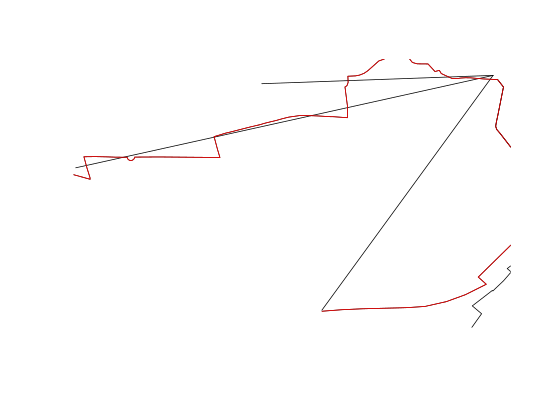

This function is a wrapper around gDistance that matches lines based on the Hausdorff distance
line_match(l1, l2, threshold = 0.01, return_sp = FALSE)
| l1 | A spatial object |
|---|---|
| l2 | A spatial object |
| threshold | The threshold for a match - distances greater than this will not count as matches |
| return_sp | Should the function return a spatial result (FALSE by default) |
x1 = 2:4 x2 = 3:5 match(x1, x2) # how the base function works#> [1] NA 1 2l1 = flowlines[2:4,] l2 = routes_fast[3:5,] (lmatches = line_match(l1, l2)) # how the stplanr version works#> Warning: Spatial object 1 is not projected; GEOS expects planar coordinates#> Warning: Spatial object 2 is not projected; GEOS expects planar coordinates#> [1] NA 1 2l2matched = l2[lmatches[!is.na(lmatches)],] plot(l1)plot(l2, add = TRUE)plot(l2matched, add = TRUE, col = "red") # showing matched routesl2matched2 = line_match(l1, l2, return_sp = TRUE)#> Warning: Spatial object 1 is not projected; GEOS expects planar coordinates#> Warning: Spatial object 2 is not projected; GEOS expects planar coordinatesidentical(l2matched, l2matched2)#> [1] FALSE# decreasing the match likelihood via the threshold line_match(l1, l2, threshold = 0.003)#> Warning: Spatial object 1 is not projected; GEOS expects planar coordinates#> Warning: Spatial object 2 is not projected; GEOS expects planar coordinates#> [1] NA 1 NA